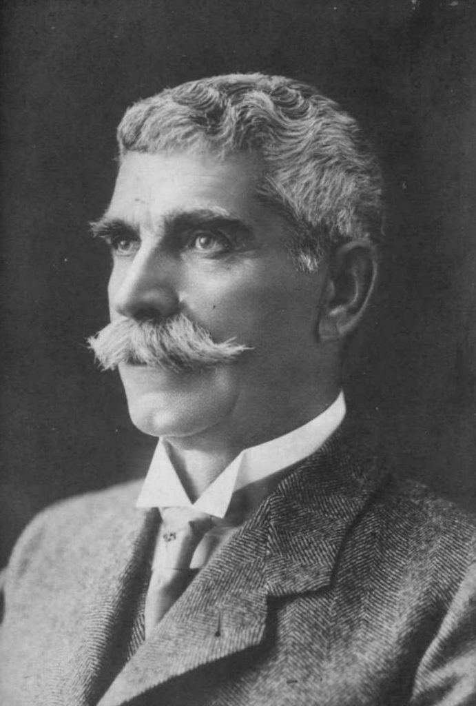

Иван Вазов
Роден на 9 юли 1850г.
Жанрове - лирика, епос
Анализ на Епопея на забравените
Епопея на забравените“ е цикъл от 12 оди, подредени в съответствие с момента на създаване, написани от Иван Вазов
в Пловдив в периода 1881 – 1884 г.
Цикълът включва:
„Левски“
„Бенковски“
„Кочо (Защитата на Перущица)“
„Братя Жекови“
„Каблешков“
„Паисий“
„Братя Миладинови“
„Раковски“
„Караджата“
„Волов“
„Ботев“
Този цикъл съдържа някои от най-красивите и силни български поеми, които призовават към „събуждане на народната
памет“.
Отношението на обществото към тези събития като цяло винаги е било с чувство на гордост и благодарност. Разбира се
има времена, непосредствено след Освобождението, когато героизмът и жертвите на Руско-турската освободителна война
са тънели в забвение, но тук се появява Вазов, който вади от мрака на миналото всички исторически личности от
Паисий Хилендарски, през Георги Бенковски, Васил Левски, Георги Стойков Раковски и Опълченците на Шипка. Разбира
се, забвението се дължи по-скоро на властта, отколкото на самите хора, защото народът винаги е признателен на
своите освободители, както българи, така и чужденци. За тази признателност свидетелстват множество войнишки
паметници на незнайни воини, руски освободители и др.
Възмутен от българското общество в първите десетилетия след освобождението, когато на мястото на възвишените
идеали идват егоизмът, алчността, липсата на родолюбие, Вазов създава поредица от творби със стремеж да върне
българското съзнание, положителните стремежи и цели.
Неслучайно той озаглавява цикъла „Епопея на забравените“. Всяка от двете думи в заглавието играе важна роля.
Първата част от заглавието – „епопея“, отвежда към мисълта за исторически важен период, изпълнен с величествени
събития и герои, които са очертали съдбата на една нация. Така първата част от заглавието дава косвена оценка за
същността на българското възраждане. Тя играе ролята на своеобразен паметник на националната история. Онова, за
което епопеята разказва, по принцип е незабравимото. Втората част от заглавието (на забравените) е упрек, отправен
към Новото време, към нова България, която бързо и неблагодарно обръща гръб на всички, на които дължим свободата
си.
Броят на одите (12) не е случаен, съзнателно е търсена аналогия с 12-те Христови ученици. По този начин героите в
Епопеята добиват ореол, подвигът и делото им се сакрализират. Подредбата на одите също не е случайна. Започва се с
„Левски“ – най-яркото въплъщение на идеала за освобождение, единичния подвиг на личността, и се завършва с
„Опълченците на Шипка“ – въплъщение на идеала за един народ.